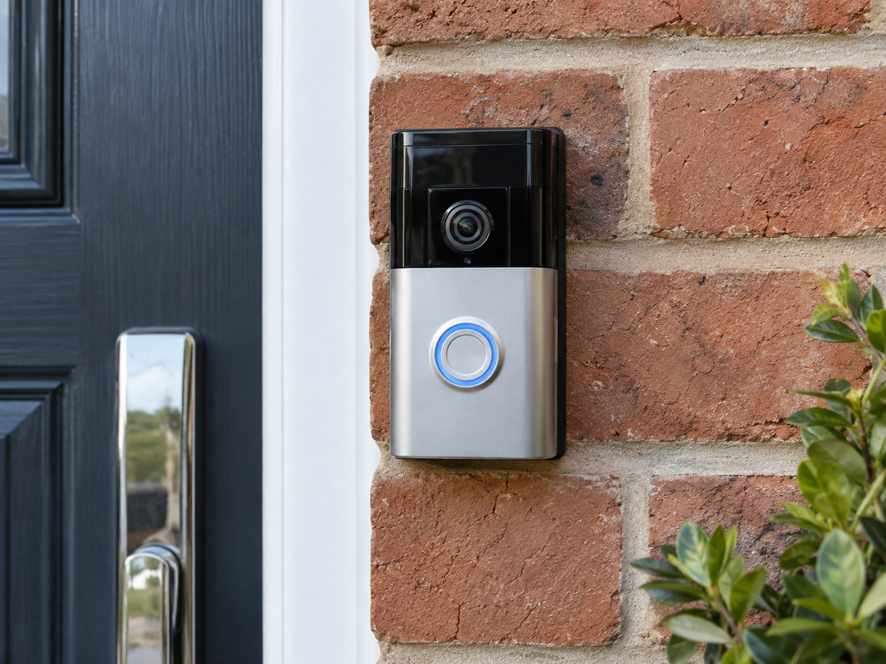
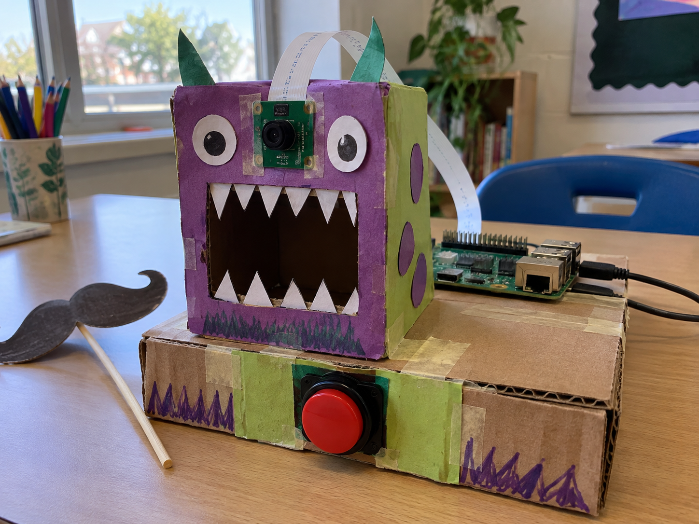

Video doorbell
DetectCamera sees movement.
DecideIs a person there?
DoSave a video clip.
A camera turns light into digital images. Connect a Raspberry Pi Camera Module to a Raspberry Pi computer with a flat ribbon cable.
Use Python to take a photograph or record a video. Your program can also examine images and decide what to do next.


from picamera2 import Picamera2
camera = Picamera2()
camera.start_and_capture_file(
"photo.jpg", delay=2,
show_preview=False)
camera.close()from picamera2 import Picamera2
camera = Picamera2()
camera.start_and_record_video(
"video.mp4", duration=5)
camera.close()